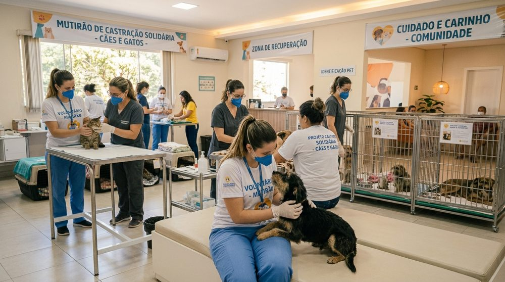
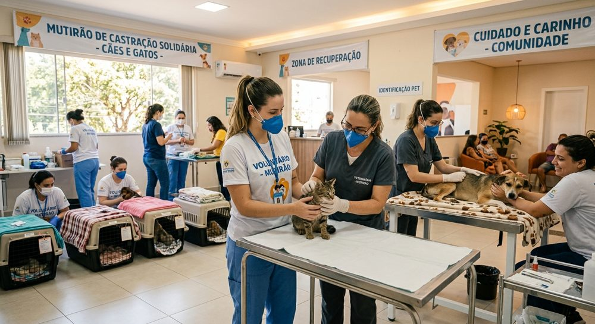
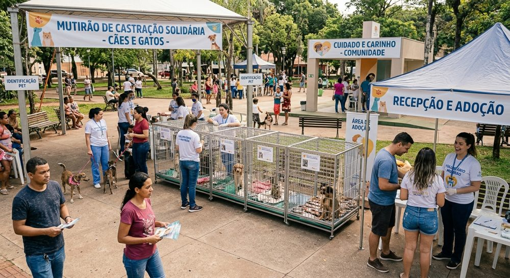

1. Resgate e Pronto Socorro Animal
Oferecemos socorro emergencial, transporte veterinário e tratamento médico completo para cães e gatos vítimas de atropelamentos, doenças graves ou abandono severo.
Como contribuir: doação de medicamentos veterinários, ração especial e insumos hospitalares.

2. Mutirão de Castração Solidária
Realizamos mutirões mensais de controle populacional ético, com procedimentos cirúrgicos a preços acessíveis para tutores de baixa renda e animais de rua comunitários.
Como contribuir: trabalho voluntário no apoio logístico e na triagem dos mutirões.

3. Feira de Adoção e Conscientização
Promovemos feiras quinzenais em praças públicas e espaços parceiros para conectar nossos animais recuperados com famílias amorosas e orientadas sobre posse responsável.
Como contribuir: apadrinhamento mensal de um animal ou auxílio no transporte nos dias de evento.